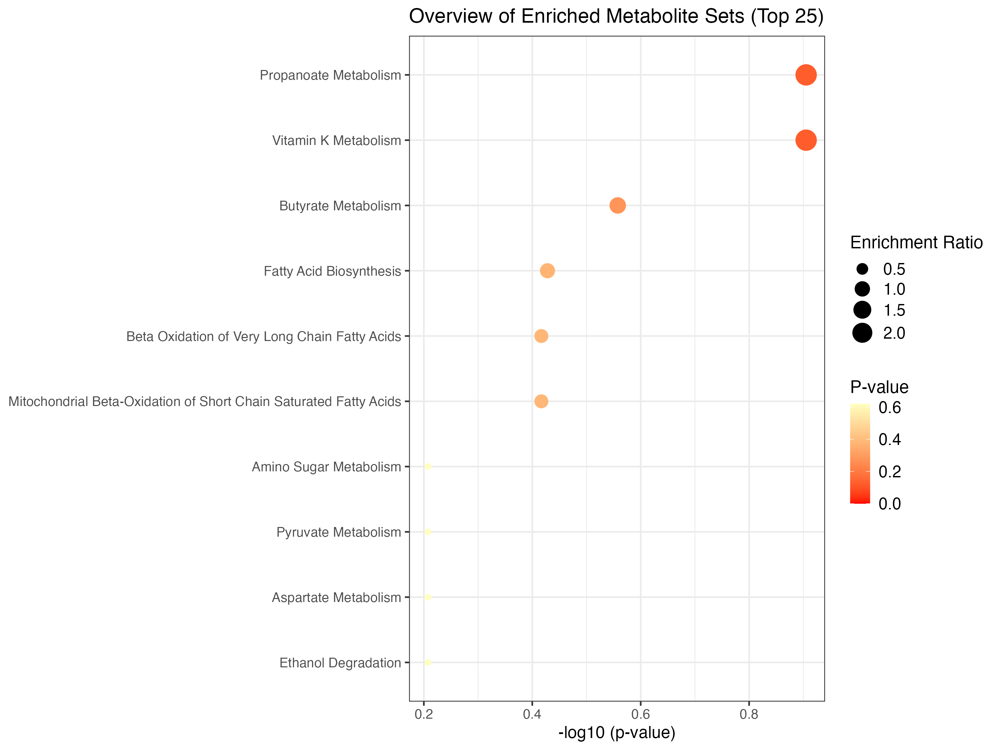
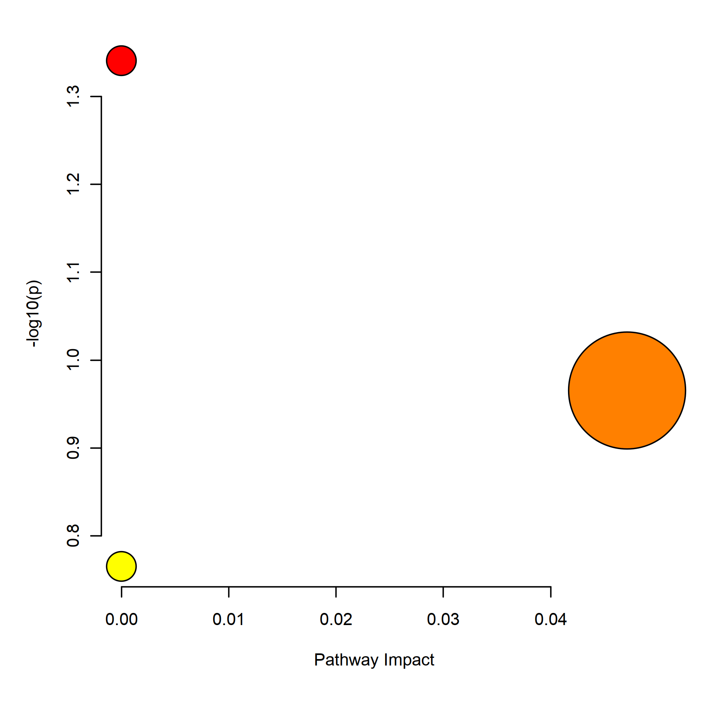

Chapter 4 Functional Analysis
Following two chapters would focus on the Enrichment Analysis and Pathway Analysis of metabolomic data. Enrichment Analysis includes three sections (i.e., ORA, SSP and QEA) and Pathway Analysis only includes ORA and QEA.
The main difference between Enrichment Analysis and Pathway Analysis are the data set that input metabolites are enriched to. In Enrichment Analysis, input metabolites are enriched to pre-defined metabolite sets while in Pathway Analysis, metabolites are enriched to pathways in KEGG.
Workflow of Enrichment analysis and Pathway analysis is attached below. Users can choose analysis module according to their data type or interest.

See more details please go to the below tutorial (MetaboAnalyst website):
4.1 Enrichment Analysis
In this tutorial, we aim to help you to walk through the enrichment analysis in Metaboanalyst5.
This module performs metabolite set enrichment analysis (MSEA) for human and mammalian species based on several libraries containing ~9000 groups of metabolite sets. Users can upload either:
1) a list of compounds
2) a list of compounds with concentrations
3) a concentration table
Before carrying out the analysis, you are advised to acquire a list of metabolites in your interest (e.g., Statistical Analysis), then apply them to different modules in this tutorial according to the input file format.
Here, we apply SCFA sequencing data of stool samples in GvHD project as demo data.
4.1.2 Over representation analysis (ORA)
ORA is used to evaluate whether a particular set of metabolites is represented more than expected by chance within a given compound list.
ORA is performed when the user provides only a list of compound names.
## Read input from the SCFA data of GvHD project.
SCFA_tbl <- readxl::read_xlsx('./dataset/InputFiles/GvHD_stool_metabolites_SCFA.xlsx') %>%
as.data.frame()
metabolite_lst <- SCFA_tbl$Compounds
## Create mSetObj, always initiate your mSet at the beginning.
mSet <- InitDataObjects("conc", "msetora", FALSE)[1] “MetaboAnalyst R objects initialized …”
## Set up mSetObj with the list of compounds
mSet <- Setup.MapData(mSet, metabolite_lst)
## Cross reference list of compounds against libraries (hmdb, pubchem, chebi, kegg, metlin)
mSet <- CrossReferencing(mSet, "name")[1] “Loaded files from MetaboAnalyst web-server.”
[1] “Loaded files from MetaboAnalyst web-server.”
[1] “1”
[2] “Name matching OK, please inspect (and manual correct) the results then proceed.”
$query.vec [1] “Acetic acid” “Propionic acid” “Isobutyric acid” “Butyric acid” “Isovaleric acid” “Valeric acid” “Hexanoic acid”
$hit.inx [1] 29 158 1241 28 566 708 409
$hit.values [1] “Acetic acid” “Propionic acid” “Isobutyric acid” “Butyric acid” “Isovaleric acid” “Valeric acid” “Caproic acid”
$match.state [1] 1 1 1 1 1 1 1
[1] “Loaded files from MetaboAnalyst web-server.”
## Set the metabolite filter
mSet <- SetMetabolomeFilter(mSet, F)
## Select metabolite set library, we use fecal in this example, you can also choose "kegg_pathway", "smpdb_pathway", "blood", "urine", "csf", "snp", "predicted", "location", "drug, etc,.
mSet <- SetCurrentMsetLib(mSet, "fecal", 2)
## Calculate hypergeometric score, results table generated in your working directory
mSet <- CalculateHyperScore(mSet)[1] “Loaded files from MetaboAnalyst web-server.”
ora_res <- read.csv('./msea_ora_result.csv', check.names = FALSE)
## Enrichment Ratio is computed by Hits / Expected, where hits = observed hits expected = expected hits (see the Table below)
knitr::kable(head(ora_res))| total | expected | hits | Raw p | Holm p | FDR | |
|---|---|---|---|---|---|---|
| Irritable Bowel Syndrome | 93 | 0.5140 | 7 | 0e+00 | 4.0e-07 | 2.0e-07 |
| Celiac Disease | 98 | 0.5410 | 7 | 0e+00 | 6.0e-07 | 2.0e-07 |
| Treated Celiac Disease | 98 | 0.5410 | 7 | 0e+00 | 6.0e-07 | 2.0e-07 |
| Juvenile Idiopathic Arthritis | 3 | 0.0166 | 3 | 1e-07 | 4.1e-06 | 1.1e-06 |
| Pervasive Developmental Disorder Not Otherwise Specified | 82 | 0.4530 | 6 | 4e-07 | 1.6e-05 | 3.0e-06 |
| Nonalcoholic Fatty Liver Disease | 158 | 0.8730 | 7 | 4e-07 | 1.6e-05 | 3.0e-06 |
## Plot the ORA, bar-graph
mSet <- PlotORA(mSet, "./dataset/OutputFiles/ora_0_", "bar", "png", 250, width=NA)
knitr::include_graphics('./dataset/OutputFiles/ora_0_dpi250.png')
## Plot DotPlot
mSet <- PlotEnrichDotPlot(mSet, "ora", "./dataset/OutputFiles/ora_dot_0_", "png", 250, width=NA)
knitr::include_graphics('./dataset/OutputFiles/ora_dot_0_dpi250.png')
4.1.3 Clean environment 1
Remove all variables in env because a new mSet object needs to be created for the following analysis.
4.1.4 Single Sample Profiling
For common human biofluids such as blood, urine, or CSF, normal concentration ranges are known for many metabolites.
In clinical metabolomic studies, it is often desirable to know whether certain metabolite concentrations in a given sample are significantly higher or lower than their normal ranges. MSEA’s SSP module is designed to provide this kind of analysis.
In particular, SSP is performed when the user provides a two-column list of both compounds and concentrations. When called, the SSP module will compare the measured concentration values of each compound to its recorded normal reference ranges of the corresponding biofluid.
Input for this module should be a list of metabolites and their concentrations (could be one column (1 x N) from a N * M abundance table with M samples/columns with N metabolites/rows).
## Read input from the SCFA data of GvHD project.
SCFA_tbl <- readxl::read_xlsx('./dataset/InputFiles/GvHD_stool_metabolites_SCFA.xlsx') %>%
as.data.frame()
## Initialize mSet object
mSet <- InitDataObjects("conc", "msetssp", FALSE)[1] “MetaboAnalyst R objects initialized …”
## Read in metabolites names from SCFA_tbl
cmpd.vec <- SCFA_tbl$Compounds
mSet <- Setup.MapData(mSet, cmpd.vec)
## Read in concentration of sample CJY-V0 from SCFA_tbl
conc.vec <- SCFA_tbl$`CJY-V0`
mSet <- Setup.ConcData(mSet, conc.vec)
## Set unit of metabolites' concentration
mSet <- Setup.BiofluidType(mSet, "urine")
## Check names
mSet <- CrossReferencing(mSet, "name")[1] “Loaded files from MetaboAnalyst web-server.”
[1] “Loaded files from MetaboAnalyst web-server.”
[1] “1”
[2] “Name matching OK, please inspect (and manual correct) the results then proceed.”
[1] “Loaded files from MetaboAnalyst web-server.”
[1] “Loaded files from MetaboAnalyst web-server.” [1] “Loaded files from MetaboAnalyst web-server.”
## Select all metabolites in our interests and do ORA.
mSet <- Setup.MapData(mSet, cmpd.vec)
## Filter
mSet <- SetMetabolomeFilter(mSet, F)
## Setup library
mSet <- SetCurrentMsetLib(mSet, "smpdb_pathway", 2)
## Calculate hyperscore
mSet <- CalculateHyperScore(mSet)[1] “Loaded files from MetaboAnalyst web-server.”
| total | expected | hits | Raw p | Holm p | FDR | |
|---|---|---|---|---|---|---|
| Fatty Acid Biosynthesis | 35 | 0.2390 | 3 | 0.00117 | 0.114 | 0.114 |
| Vitamin K Metabolism | 14 | 0.0957 | 1 | 0.09210 | 1.000 | 1.000 |
| Beta Oxidation of Very Long Chain Fatty Acids | 17 | 0.1160 | 1 | 0.11100 | 1.000 | 1.000 |
| Butyrate Metabolism | 19 | 0.1300 | 1 | 0.12300 | 1.000 | 1.000 |
| Ethanol Degradation | 19 | 0.1300 | 1 | 0.12300 | 1.000 | 1.000 |
| Mitochondrial Beta-Oxidation of Short Chain Saturated Fatty Acids | 27 | 0.1850 | 1 | 0.17100 | 1.000 | 1.000 |
## Plot
mSet <- PlotORA(mSetObj = mSet, imgName = "./dataset/OutputFiles/SSP_ora_0_",
imgOpt = "net", format = "png", dpi = 250, width=NA)
knitr::include_graphics('./dataset/OutputFiles/SSP_ora_0_dpi250.png')mSet <- PlotEnrichDotPlot(mSetObj = mSet, enrichType = "ora",
imgName = "./dataset/OutputFiles/SSP_ora_dot_0_",
format = "png", dpi = 250, width=NA)
knitr::include_graphics('./dataset/OutputFiles/SSP_ora_dot_0_dpi250.png')
4.1.5 Clean environment 2
Remove all variables in env because a new mSet object needs to be created for the following analysis.
4.1.6 Quantitative Enrichment Analysis (QEA)
QEA is performed when the user uploads a concentration table containing metabolite concentration data from multiple samples.
QEA is based on the globaltest algorithm to perform enrichment analysis directly from raw concentration data and does not require a list of significantly changed compounds.
Especially, QEA adopted globaltest as the backend. Please find citation for detailed introduction.
In short, globaltest calculates Q values, the formula to calculate Q-statistic can be obtained from the original publication by (Goeman JJ, et al). Q-statistic can be intuitively interpreted as an aggregate of squared covariance between concentration changes and the phenotypes - compounds with large variance have much more influence on the Q than compound with small variance.
And the null hypothesis in QEA to be tested are made to be whether two groups of samples are not different with respect to their overall metabolites’ abundance pattern. Under this hypothesis, expectation and standard deviation can be calculated and p value can be estimated. If p < 0.05, it means that two groups of samples are different with respect to their overall metabolites’ abundance pattern.
Starting Rserve: /Library/Frameworks/R.framework/Resources/bin/R CMD /Library/Frameworks/R.framework/Versions/4.1/Resources/library/Rserve/libs//Rserve –no-save
[1] “MetaboAnalyst R objects initialized …”
## Read in data table
SCFA_tbl <- readxl::read_xlsx('./dataset/InputFiles/GvHD_stool_metabolites_SCFA.xlsx') %>%
as.data.frame()
## Replace N/A with NA
SCFA_tbl[SCFA_tbl == "N/A"] <- NA
## Select columns from input data table
SCFA_tbl <- SCFA_tbl[,c(2,5:ncol(SCFA_tbl))] %>% column_to_rownames('Compounds') %>%
t() %>% as.data.frame()
## Create Group Info
SCFA_tbl %<>% dplyr::mutate(Group = c(rep('A',25), rep('B',31))) %>%
dplyr::select(c('Group', colnames(.)[colnames(.) != 'Group'])) %>%
rownames_to_column('Samples')
## Write data table in csv file
write.csv(SCFA_tbl, './dataset/OutputFiles/GvHD_stool_metabolites_SCFA.csv', row.names = FALSE)
## Read in data table
mSet <- Read.TextData(mSet, "./dataset/OutputFiles/GvHD_stool_metabolites_SCFA.csv", "rowu", "disc")
# Perform cross-referencing of compound names
mSet <- CrossReferencing(mSet, "name")[1] “Loaded files from MetaboAnalyst web-server.”
[1] “Loaded files from MetaboAnalyst web-server.”
[1] “1”
[2] “Name matching OK, please inspect (and manual correct) the results then proceed.”
[1] “Loaded files from MetaboAnalyst web-server.”
[1] “Successfully passed sanity check!”
[2] “Samples are not paired.”
[3] “2 groups were detected in samples.”
[4] “Only English letters, numbers, underscore, hyphen and forward slash (/) are allowed.”
[5] “Other special characters or punctuations (if any) will be stripped off.”
[6] “All data values are numeric.”
[7] “A total of 26 (6.6%) missing values were detected.”
[8] “By default, missing values will be replaced by 1/5 of min positive values of their corresponding variables”
[9] “Click the Proceed button if you accept the default practice;”
[10] “Or click the Missing Values button to use other methods.”
# Replace missing values with minimum concentration levels
mSet <- ReplaceMin(mSet)
# Perform no normalization
mSet <- PreparePrenormData(mSet)
#mSet <- Normalization(mSet, rowNorm = "SumNorm", transNorm = "LogNorm", scaleNorm = "ParetoNorm", ref = "PIF_178", ratio=FALSE, ratioNum=20)
mSet <- Normalization(mSet, rowNorm = "SumNorm", transNorm = "LogNorm", scaleNorm = "ParetoNorm")
# Plot normalization
mSet <- PlotNormSummary(mSet, "./dataset/OutputFiles/norm_0_", "png", 250, width=NA)
knitr::include_graphics('./dataset/OutputFiles/norm_0_dpi250.png')
# Plot sample-wise normalization
mSet <- PlotSampleNormSummary(mSet, "./dataset/OutputFiles/snorm_0_", "png", 250, width=NA)
knitr::include_graphics('./dataset/OutputFiles/snorm_0_dpi250.png')# Set the metabolome filter
mSet <- SetMetabolomeFilter(mSet, F)
# Set the metabolite set library to pathway
mSet <- SetCurrentMsetLib(mSet, "smpdb_pathway", 2)
# Calculate the global test score
mSet <- CalculateGlobalTestScore(mSet)[1] “Loaded files from MetaboAnalyst web-server.”
| X | Total.Cmpd | Hits | Statistic.Q | Expected.Q | Raw.p | Holm.p | FDR |
|---|---|---|---|---|---|---|---|
| Propanoate Metabolism | 42 | 1 | 4.3168 | 1.8182 | 0.12440 | 1 | 0.62002 |
| Vitamin K Metabolism | 14 | 1 | 4.3168 | 1.8182 | 0.12440 | 1 | 0.62002 |
| Butyrate Metabolism | 19 | 1 | 2.1853 | 1.8182 | 0.27692 | 1 | 0.62002 |
| Fatty Acid Biosynthesis | 35 | 3 | 1.7437 | 1.8182 | 0.37316 | 1 | 0.62002 |
| Beta Oxidation of Very Long Chain Fatty Acids | 17 | 1 | 1.4123 | 1.8182 | 0.38302 | 1 | 0.62002 |
| Mitochondrial Beta-Oxidation of Short Chain Saturated Fatty Acids | 27 | 1 | 1.4123 | 1.8182 | 0.38302 | 1 | 0.62002 |
# Plot the QEA
mSet <- PlotQEA.Overview(mSet, "./dataset/OutputFiles/qea_0_", "bar", "png", 250, width=NA)
knitr::include_graphics('./dataset/OutputFiles/qea_0_dpi250.png')
mSet <- PlotEnrichDotPlot(mSet, "qea", "./dataset/OutputFiles/qea_dot_0_", "png", 250, width=NA)
knitr::include_graphics('./dataset/OutputFiles/qea_dot_0_dpi250.png')
Remove all variables in env because a new mSet object needs to be created for the following analysis.
4.2 Pathway Analysis
In this tutorial, we aim to help you to walk through the pathway analysis in Metaboanalyst5.
This module supports pathway analysis (integrating enrichment analysis and pathway topology analysis) and visualization for 26 model organisms, including Human, Mouse, Rat, Cow, Chicken, Zebrafish, Arabidopsis thaliana, Rice, Drosophila, Malaria, S. cerevisae, E.coli, and others species.
Here, we apply TM metabolites sequencing data of stool samples in GvHD project as demo data. Moreover, to reduce data noise, we selected differentially abundant metabolites in aGVHD patients from the differential analysis result in Xu XiaoMin’s analysis.
4.2.2 Over representation analysis
Similar to ORA in Enrichment analysis.
## Read in differentially abundant TM metanolites data from GVHD project
DA_metabolites <- readxl::read_xlsx('./dataset/InputFiles/DA_metabolites_agvhd_adult_result.xlsx') %>%
as.data.frame()
## Create vector consisting of compounds for enrichment analysis
tmp.vec <- DA_metabolites$Compounds
## Create mSetObj for storing objects created during your analysis
mSet <- InitDataObjects("conc", "pathora", FALSE)[1] “MetaboAnalyst R objects initialized …”
## Set up mSetObj with the list of compounds
mSet <- Setup.MapData(mSet, tmp.vec)
## Cross reference list of compounds against libraries (hmdb, pubchem, chebi, kegg, metlin). This step is to make sure that all metabolites names provided match the metabolites' names in KEGG database.
mSet <- CrossReferencing(mSet, "name")[1] “Loaded files from MetaboAnalyst web-server.”
[1] “Loaded files from MetaboAnalyst web-server.”
[1] “0”
[2] “Over half of the compound IDs could not be matched to our database. Please make sure that correct compound IDs or common compound names are used.”
## Remove metabolites failed to match the metabolites' names in KEGG database.
tmp.vec <- tmp.vec[mSet$name.map$match.state == 1]
## Re-initialize mSet object
mSet <- InitDataObjects("conc", "pathora", FALSE)
## Set up mSetObj with the matched list of compounds
mSet <- Setup.MapData(mSet, tmp.vec)
## Cross reference list of compounds against libraries (hmdb, pubchem, chebi, kegg, metlin). Check again if all metabolites' names have their matches in KEGG database
mSet <- CrossReferencing(mSet, "name")[1] “Loaded files from MetaboAnalyst web-server.”
[1] “Loaded files from MetaboAnalyst web-server.”
[1] “1”
[2] “Name matching OK, please inspect (and manual correct) the results then proceed.”
## Creates a mapping result table shows HMDB, KEGG, PubChem, etc. IDs. Saved as "name_map.csv" or can be found in mSet$dataSet$map.table. Compounds with no hits will contain NAs across the columns.
mSet <- CreateMappingResultTable(mSet)[1] “Loaded files from MetaboAnalyst web-server.”
## Select the pathway library, ranging from mammals to prokaryotes
## Note the third parameter, where users need to input the KEGG pathway version.
## Use "current" for the latest KEGG pathway library or "v2018" for the KEGG pathway library version prior to November 2019.
mSet <- SetKEGG.PathLib(mSet, "hsa", "current")
## Set the metabolite filter. Default set to false
mSet <- SetMetabolomeFilter(mSet, F)
## Calculate the over representation analysis score, here we selected to use the hypergeometric test (alternative is Fisher's exact test)
## A results table "pathway_results.csv" will be created and found within your working directory
# mSet <- CalculateOraScore(mSet, "rbc", "hyperg")
#
# pathway_res <- read.csv('./pathway_results.csv')
#
# knitr::kable(head(pathway_res))
#
# # Plot of the Pathway Analysis Overview
# mSet <- PlotPathSummary(mSet,show.grid=FALSE, "./dataset/OutputFiles/path_view_0_", "png", dpi =250, width=NA)
knitr::include_graphics('./dataset/OutputFiles/path_view_0_dpi250.png')
4.2.4 Concentration Table (QEA)
Similar to QEA in Enrichment analysis.
KO enrichment is calculated via the global test algorithm when abundance of metabolites are provided.
Global test evaluates whether a set of genes (i.e. KEGG pathways) is significantly associated with a variable of interest. Compared to ORA, which uses only the total number of KO hits in a pathway, global test considers the gene abundance values and is considered to be more sensitive than ORA. It assumes that if a gene set can be used to predict an outcome of interest, the gene expression patterns per outcome must be different.
The global test algorithm is implemented in MicrobiomeAnalyst using the globaltest R package. P-values for both methods are corrected for multiple-testing using the Benjamini and Hochberg’s False-Discovery Rate (FDR).
In this module, we use differentially abundant metabolites in aGVHD patients from the differential analysis result in Xu XiaoMin’s analysis and their abundance as input.
## Read in differentially abundant TM metanolites data from GVHD project
DA_metabolites <- readxl::read_xlsx('./dataset/InputFiles/DA_metabolites_agvhd_adult_result.xlsx') %>%
as.data.frame()
## Initialize data object
mSet <- InitDataObjects("conc", "pathqea", FALSE)Starting Rserve: /Library/Frameworks/R.framework/Resources/bin/R CMD /Library/Frameworks/R.framework/Versions/4.1/Resources/library/Rserve/libs//Rserve –no-save
[1] “MetaboAnalyst R objects initialized …”
## Read in data table
input_df <- readxl::read_xlsx('./dataset/InputFiles/GvHD_stool_metabolites_TM.xlsx') %>%
as.data.frame() %>%
.[,c(2,25:ncol(.))] %>%
column_to_rownames('Compounds') %>%
.[DA_metabolites$Compounds,] %>%
t() %>%
as.data.frame()
Groupinfo <- rownames(input_df) %>%
stringr::str_split('-') %>%
as.data.frame() %>%
.[2,] %>%
unlist() %>%
as.vector()
input_df %<>% dplyr::mutate(Group = Groupinfo) %>%
dplyr::select(c('Group', colnames(.)[colnames(.) != 'Group'])) %>%
rownames_to_column('Sample')
## Write reformed metabolites abundance table into csv file
write.csv(input_df, './dataset/OutputFiles/GvHD_stool_metabolites_TM.csv',row.names = FALSE)
mSet <- Read.TextData(mSet, './dataset/OutputFiles/GvHD_stool_metabolites_TM.csv', "rowu", "disc")
## Show first few rows in data table
knitr::kable(head(input_df))| Sample | Group | Erucic acid | 5-Methylcytosine | D-Gluconic Acid | LPE(14:0/0:0) | N-Acetylglucosamine 1-Phosphate | 7-ketodeoxycholic acid | Bis(1-inositol) -3,1’-phosphate 1-phosphate | Asp-phe | Phenylacetyl-L-Glutamine | N-Acetylglycine | Carnitine C2:0 | Acetylcholine | Lithocholic acid | 3-Carboxypropyltrimethylammonium | Biotinamide | 5’-deoxy-5’-fluoroadenosine | Carnitine C5:1 | Val-Val | Gly Leu Tyr | Ile-Thr | Isoleucyl-Serine | Isoleucyl-Tyrosine | Phe Val Ala | Phosphonic acid, P-[(3R)-3-amino-4-[(3-hexylphenyl)amino]-4-oxobutyl]- | 2-[2,4-dihydroxy-3-(3-methylbut-2-en-1-yl)phenyl]-1-[2,4,6-trihydroxy-3-(3-methylbut-2-en-1-yl)phenyl]propan-1-one | Asp Ile Ile | Gly Leu Val | Ile Glu Leu | Ile Ile Asn | Lys Pro Ile | Phylloquinone oxide | Thr Val Met | Val Leu Thr | (2R,3S,4R,5R)-2,3,4,5,6-pentahydroxyhexanoate |
|---|---|---|---|---|---|---|---|---|---|---|---|---|---|---|---|---|---|---|---|---|---|---|---|---|---|---|---|---|---|---|---|---|---|---|---|
| TZW-V0 | V0 | 1629500 | 630750 | 11598000 | 1900000 | 1048900 | 142580.0 | 4516900 | 1896000 | 483960 | 75306000 | 35820000 | 169220 | 30462 | 169220 | 72050 | 52622 | 48756 | 6690500 | 382840 | 151620 | 863010 | 3696700 | 371890 | 419900 | 376300 | 1992200 | 304420 | 321110 | 243390 | 17617 | 3885 | 1950000 | 582200 | 208490000 |
| LBC-V0 | V0 | 17057 | 220290 | 8239500 | 68958 | 9880900 | 6446.1 | 313960 | 19488000 | 569570 | 11310000 | 81713000 | 90812 | 9 | 90812 | 533990 | 9 | 338900 | 1044600 | 9 | 99102 | 468170 | 7789300 | 46193 | 88988 | 14154 | 463070 | 10903 | 32430 | 29187 | 12902000 | 9 | 333220 | 210680 | 166450000 |
| HXZ-V0 | V0 | 3719000 | 316360 | 91189 | 14390000 | 37784000 | 21965000.0 | 459320 | 5671200 | 8502200 | 6758300 | 71495000 | 518950 | 438800 | 518950 | 1222000 | 36295 | 953350 | 8538900 | 88531 | 454250 | 952750 | 56697 | 45953 | 115110 | 2798900 | 348560 | 79613 | 134400 | 438750 | 7569200 | 24432 | 747830 | 86317 | 2163600 |
| LJY-V0 | V0 | 1641600 | 285270 | 72194 | 7366800 | 9557700 | 3289400.0 | 71782 | 756830 | 30602 | 531930 | 387590 | 1345400 | 6488400 | 1345400 | 544550 | 27188 | 295820 | 3163500 | 136380 | 180510 | 819430 | 21168 | 171330 | 159850 | 1478200 | 804870 | 128420 | 910850 | 379890 | 78433 | 459240 | 576110 | 123100 | 1502600 |
| CJY-V0 | V0 | 9 | 45013 | 25589 | 882500 | 561320 | 1603.1 | 9 | 7463500 | 556470 | 5814900 | 13723000 | 26319 | 9 | 26319 | 182350 | 18175 | 135980 | 1555700 | 38015 | 130400 | 441760 | 3275600 | 235320 | 154660 | 169880 | 568150 | 35916 | 48067 | 215340 | 328930 | 9 | 763870 | 97575 | 900440 |
| WKM-V0 | V0 | 3079600 | 228130 | 396980 | 8410000 | 12296000 | 7266400.0 | 42405 | 13785000 | 4553400 | 9620400 | 1311800 | 4392400 | 9 | 4392400 | 74831 | 79472 | 48558 | 5309200 | 88741 | 221440 | 593130 | 44678 | 250550 | 140720 | 1660200 | 522490 | 234090 | 263740 | 415690 | 9312900 | 586940 | 619550 | 136990 | 8894600 |
## Check metabolites Names of input table. Found >15 compounds without matches.
mSet <- CrossReferencing(mSet, "name")[1] “Loaded files from MetaboAnalyst web-server.”
[1] “Loaded files from MetaboAnalyst web-server.”
[1] “0”
[2] “Over half of the compound IDs could not be matched to our database. Please make sure that correct compound IDs or common compound names are used.”
## Keep matched metabolites
metabolites_keep <- mSet$name.map$query.vec[mSet$name.map$match.state == 1]
input_df <- input_df[c('Sample','Group', metabolites_keep)]
## Overwrite previously generated abundance csv file with matched metabolites
write.csv(input_df, './dataset/OutputFiles/GvHD_stool_metabolites_TM.csv',row.names = FALSE)
## Initialize data object again
mSet <- InitDataObjects("conc", "pathqea", FALSE)
## Read in updated metabolites abundance table
mSet <- Read.TextData(mSet, './dataset/OutputFiles/GvHD_stool_metabolites_TM.csv', "rowu", "disc")
## Check Sanity and replace 0
mSet <- SanityCheckData(mSet)[1] “Successfully passed sanity check!”
[2] “Samples are not paired.”
[3] “2 groups were detected in samples.”
[4] “Only English letters, numbers, underscore, hyphen and forward slash (/) are allowed.”
[5] “Other special characters or punctuations (if any) will be stripped off.”
[6] “All data values are numeric.”
[7] “A total of 0 (0%) missing values were detected.”
[8] “By default, missing values will be replaced by 1/5 of min positive values of their corresponding variables”
[9] “Click the Proceed button if you accept the default practice;”
[10] “Or click the Missing Values button to use other methods.”
mSet <- ReplaceMin(mSet)
## Check metabolites Names of input table again
mSet <- CrossReferencing(mSet, "name")[1] “Loaded files from MetaboAnalyst web-server.”
[1] “Loaded files from MetaboAnalyst web-server.”
[1] “1”
[2] “Name matching OK, please inspect (and manual correct) the results then proceed.”
## Creates a mapping result table shows HMDB, KEGG, PubChem, etc. IDs. Saved as "name_map.csv" or can be found in mSet$dataSet$map.table. Compounds with no hits will contain NAs across the columns.
mSet <- CreateMappingResultTable(mSet)[1] “Loaded files from MetaboAnalyst web-server.”
## Normalize
mSet <- PreparePrenormData(mSet)
mSet <- Normalization(mSet, rowNorm = "SumNorm", transNorm = "LogNorm", scaleNorm = "ParetoNorm")
mSet <- PlotNormSummary(mSet,
imgName = "./dataset/OutputFiles/kegg_pathnorm_0_",
format = "png", dpi = 250, width=NA)
knitr::include_graphics('./dataset/OutputFiles/kegg_pathnorm_0_dpi250.png')mSet <- PlotSampleNormSummary(mSet, "./dataset/OutputFiles/kegg_pathsnorm_0_", "png", 250, width=NA)
knitr::include_graphics('./dataset/OutputFiles/kegg_pathsnorm_0_dpi250.png')
## Enrich to KEGG
mSet <- SetKEGG.PathLib(mSet, "hsa", "current")
mSet <- SetMetabolomeFilter(mSet, F)
mSet <- CalculateQeaScore(mSet, "rbc", "gt")[1] “Loaded files from MetaboAnalyst web-server.” [1] “http://api.xialab.ca/pathwayqea” [1] “Failed to connect to Xia Lab API Server!”
# pathway_res <- read.csv('./pathway_results.csv', check.names = FALSE)
# knitr::kable(head(pathway_res))
# mSet <- PlotPathSummary(mSet, F, "./dataset/OutputFiles/kegg_path_view_0_", "png", 250, width=NA, NA, NA )
knitr::include_graphics('./dataset/OutputFiles/kegg_path_view_0_dpi250.png')
## Plot specified pathway map
# mSet <- PlotKEGGPath(mSet, "Phenylalanine, tyrosine and tryptophan biosynthesis",576, 480, "png", NULL)
# mSet <- RerenderMetPAGraph(mSet, "zoom1658398230135.png",576.0, 480.0, 100.0)
# mSet <- PlotKEGGPath(mSet, "Glycine, serine and threonine metabolism",576, 480, "png", NULL)4.3 Functional Analysis by R package
Functional Analysis for DE metabolites
ORA: Over Representive Analysis
GSEA: Gene Set Enrichment Analysis
4.3.3 Differential Analysis
Fold change (group1 vs group2)
- RawData
VIP (Variable influence on projection & coefficient)
Variable influence on projection (VIP) for orthogonal projections to latent structures (OPLS)
Variable influence on projection (VIP) for projections to latent structures (PLS)
T-test
- significant differences between two groups (p value)
Merging result
Foldchange by Raw Data
VIP by Normalized Data
test Pvalue by Normalized Data
FoldChange <- function(
x,
group,
group_names) {
# dataseat
metadata <- SummarizedExperiment::colData(x) %>%
as.data.frame()
profile <- SummarizedExperiment::assay(x) %>%
as.data.frame()
colnames(metadata)[which(colnames(metadata) == group)] <- "CompVar"
phenotype <- metadata %>%
dplyr::filter(CompVar %in% group_names) %>%
dplyr::mutate(CompVar = as.character(CompVar)) %>%
dplyr::mutate(CompVar = factor(CompVar, levels = group_names))
sid <- intersect(rownames(phenotype), colnames(profile))
phen <- phenotype[pmatch(sid, rownames(phenotype)), , ]
prof <- profile %>%
dplyr::select(all_of(sid))
if (!all(colnames(prof) == rownames(phen))) {
stop("Wrong Order")
}
fc_res <- apply(prof, 1, function(x1, y1) {
dat <- data.frame(value = as.numeric(x1), group = y1)
mn <- tapply(dat$value, dat$group, function(x){
mean(x, na.rm = TRUE)
}) %>%
as.data.frame() %>%
stats::setNames("value") %>%
tibble::rownames_to_column("Group")
mn1 <- with(mn, mn[Group %in% group_names[1], "value"])
mn2 <- with(mn, mn[Group %in% group_names[2], "value"])
mnall <- mean(dat$value, na.rm = TRUE)
if (all(mn1 != 0, mn2 != 0)) {
fc <- mn1 / mn2
} else {
fc <- NA
}
logfc <- log2(fc)
res <- c(fc, logfc, mnall, mn1, mn2)
return(res)
}, phen$CompVar) %>%
base::t() %>% data.frame() %>%
tibble::rownames_to_column("Feature")
colnames(fc_res) <- c("FeatureID", "FoldChange",
"Log2FoldChange",
"Mean Abundance\n(All)",
paste0("Mean Abundance\n", c("former", "latter")))
# Number of Group
dat_status <- table(phen$CompVar)
dat_status_number <- as.numeric(dat_status)
dat_status_name <- names(dat_status)
fc_res$Block <- paste(paste(dat_status_number[1], dat_status_name[1], sep = "_"),
"vs",
paste(dat_status_number[2], dat_status_name[2], sep = "_"))
res <- fc_res %>%
dplyr::select(FeatureID, Block, everything())
return(res)
}
VIP_fun <- function(
x,
group,
group_names,
VIPtype = c("OPLS", "PLS"),
vip_cutoff = 1) {
metadata <- SummarizedExperiment::colData(x) %>%
as.data.frame()
profile <- SummarizedExperiment::assay(x) %>%
as.data.frame()
colnames(metadata)[which(colnames(metadata) == group)] <- "CompVar"
phenotype <- metadata %>%
dplyr::filter(CompVar %in% group_names) %>%
dplyr::mutate(CompVar = as.character(CompVar)) %>%
dplyr::mutate(CompVar = factor(CompVar, levels = group_names))
sid <- intersect(rownames(phenotype), colnames(profile))
phen <- phenotype[pmatch(sid, rownames(phenotype)), , ]
prof <- profile %>%
dplyr::select(all_of(sid))
if (!all(colnames(prof) == rownames(phen))) {
stop("Wrong Order")
}
dataMatrix <- prof %>% base::t() # row->sampleID; col->features
sampleMetadata <- phen # row->sampleID; col->features
comparsionVn <- sampleMetadata[, "CompVar"]
# corrlation between group and features
pvaVn <- apply(dataMatrix, 2,
function(feaVn) cor.test(as.numeric(comparsionVn), feaVn)[["p.value"]])
if (VIPtype == "OPLS") {
vipVn <- getVipVn(opls(dataMatrix,
comparsionVn,
predI = 1,
orthoI = NA,
fig.pdfC = "none"))
} else {
vipVn <- getVipVn(opls(dataMatrix,
comparsionVn,
predI = 1,
fig.pdfC = "none"))
}
quantVn <- qnorm(1 - pvaVn / 2)
rmsQuantN <- sqrt(mean(quantVn^2))
opar <- par(font = 2, font.axis = 2, font.lab = 2,
las = 1,
mar = c(5.1, 4.6, 4.1, 2.1),
lwd = 2, pch = 16)
plot(pvaVn,
vipVn,
col = "red",
pch = 16,
xlab = "p-value", ylab = "VIP", xaxs = "i", yaxs = "i")
box(lwd = 2)
curve(qnorm(1 - x / 2) / rmsQuantN, 0, 1, add = TRUE, col = "red", lwd = 3)
abline(h = 1, col = "blue")
abline(v = 0.05, col = "blue")
res_temp <- data.frame(
FeatureID = names(vipVn),
VIP = vipVn,
CorPvalue = pvaVn) %>%
dplyr::arrange(desc(VIP))
vip_select <- res_temp %>%
dplyr::filter(VIP > vip_cutoff)
pl <- ggplot(vip_select, aes(FeatureID, VIP)) +
geom_segment(aes(x = FeatureID, xend = FeatureID,
y = 0, yend = VIP)) +
geom_point(shape = 21, size = 5, color = '#008000' ,fill = '#008000') +
geom_point(aes(1,2.5), color = 'white') +
geom_hline(yintercept = 1, linetype = 'dashed') +
scale_y_continuous(expand = c(0, 0)) +
labs(x = '', y = 'VIP value') +
theme_bw() +
theme(legend.position = 'none',
legend.text = element_text(color = 'black',size = 12, family = 'Arial', face = 'plain'),
panel.background = element_blank(),
panel.grid = element_blank(),
axis.text = element_text(color = 'black',size = 15, family = 'Arial', face = 'plain'),
axis.text.x = element_text(angle = 90),
axis.title = element_text(color = 'black',size = 15, family = 'Arial', face = 'plain'),
axis.ticks = element_line(color = 'black'),
axis.ticks.x = element_blank())
# Number of Group
dat_status <- table(phen$CompVar)
dat_status_number <- as.numeric(dat_status)
dat_status_name <- names(dat_status)
res_temp$Block <- paste(paste(dat_status_number[1], dat_status_name[1], sep = "_"),
"vs",
paste(dat_status_number[2], dat_status_name[2], sep = "_"))
res_df <- res_temp %>%
dplyr::select(FeatureID, Block, everything())
res <- list(vip = res_df,
plot = pl)
return(res)
}
t_fun <- function(
x,
group,
group_names) {
# dataseat
metadata <- SummarizedExperiment::colData(x) %>%
as.data.frame()
profile <- SummarizedExperiment::assay(x) %>%
as.data.frame()
# rename variables
colnames(metadata)[which(colnames(metadata) == group)] <- "CompVar"
phenotype <- metadata %>%
dplyr::filter(CompVar %in% group_names) %>%
dplyr::mutate(CompVar = as.character(CompVar)) %>%
dplyr::mutate(CompVar = factor(CompVar, levels = group_names))
sid <- intersect(rownames(phenotype), colnames(profile))
phen <- phenotype[pmatch(sid, rownames(phenotype)), , ]
prof <- profile %>%
dplyr::select(all_of(sid))
if (!all(colnames(prof) == rownames(phen))) {
stop("Wrong Order")
}
t_res <- apply(prof, 1, function(x1, y1) {
dat <- data.frame(value = as.numeric(x1), group = y1)
rest <- t.test(data = dat, value ~ group)
res <- c(rest$statistic, rest$p.value)
return(res)
}, phen$CompVar) %>%
base::t() %>% data.frame() %>%
tibble::rownames_to_column("Feature")
colnames(t_res) <- c("FeatureID", "Statistic", "Pvalue")
t_res$AdjustedPvalue <- p.adjust(as.numeric(t_res$Pvalue), method = "BH")
# Number of Group
dat_status <- table(phen$CompVar)
dat_status_number <- as.numeric(dat_status)
dat_status_name <- names(dat_status)
t_res$Block <- paste(paste(dat_status_number[1], dat_status_name[1], sep = "_"),
"vs",
paste(dat_status_number[2], dat_status_name[2], sep = "_"))
res <- t_res %>%
dplyr::select(FeatureID, Block, everything())
return(res)
}
mergedResults <- function(
fc_result,
vip_result,
test_result,
group_names,
group_labels) {
if (is.null(vip_result)) {
mdat <- fc_result %>%
dplyr::mutate(Block2 = paste(group_labels, collapse = " vs ")) %>%
dplyr::mutate(FeatureID = make.names(FeatureID)) %>%
dplyr::select(-all_of(c("Mean Abundance\n(All)",
"Mean Abundance\nformer",
"Mean Abundance\nlatter"))) %>%
dplyr::inner_join(test_result %>%
dplyr::select(-Block) %>%
dplyr::mutate(FeatureID = make.names(FeatureID)),
by = "FeatureID")
res <- mdat %>%
dplyr::select(FeatureID, Block2, Block,
FoldChange, Log2FoldChange,
Statistic, Pvalue, AdjustedPvalue,
everything()) %>%
dplyr::arrange(AdjustedPvalue, Log2FoldChange)
} else {
mdat <- fc_result %>%
dplyr::mutate(Block2 = paste(group_labels, collapse = " vs ")) %>%
dplyr::mutate(FeatureID = make.names(FeatureID)) %>%
dplyr::select(-all_of(c("Mean Abundance\n(All)",
"Mean Abundance\nformer",
"Mean Abundance\nlatter"))) %>%
dplyr::inner_join(vip_result %>%
dplyr::select(-Block) %>%
dplyr::mutate(FeatureID = make.names(FeatureID)),
by = "FeatureID") %>%
dplyr::inner_join(test_result %>%
dplyr::select(-Block) %>%
dplyr::mutate(FeatureID = make.names(FeatureID)),
by = "FeatureID")
res <- mdat %>%
dplyr::select(FeatureID, Block2, Block,
FoldChange, Log2FoldChange,
VIP, CorPvalue,
Statistic, Pvalue, AdjustedPvalue,
everything()) %>%
dplyr::arrange(AdjustedPvalue, Log2FoldChange)
}
return(res)
}
fc_res <- FoldChange(
x = se_impute,
group = "group",
group_names = c("Mild", "Moderate"))
vip_res <- VIP_fun(
x = se_norm,
group = "group",
group_names = c("Mild", "Severe"),
VIPtype = "PLS",
vip_cutoff = 1)## PLS-DA
## 26 samples x 167 variables and 1 response
## standard scaling of predictors and response(s)
## R2X(cum) R2Y(cum) Q2(cum) RMSEE pre ort pR2Y pQ2
## Total 0.12 0.692 0.33 0.288 1 0 0.1 0.05
ttest_res <- t_fun(
x = se_norm,
group = "group",
group_names = c("Mild", "Severe"))
m_results <- mergedResults(
fc_result = fc_res,
vip_result = vip_res$vip,
test_result = ttest_res,
group_names = c("Mild", "Severe"),
group_labels = c("Mild", "Severe"))
head(m_results)## FeatureID Block2 Block FoldChange Log2FoldChange VIP CorPvalue Statistic Pvalue AdjustedPvalue
## 1 M_42449 Mild vs Severe 14_Mild vs 19_Moderate 0.6571801 -0.6056393 2.362694 0.002247897 -3.498896 0.001881585 0.2132448
## 2 M_52446 Mild vs Severe 14_Mild vs 19_Moderate 0.7040861 -0.5061763 2.059461 0.009476225 -2.892892 0.008125613 0.2132448
## 3 M_1566 Mild vs Severe 14_Mild vs 19_Moderate 0.7161609 -0.4816443 2.143655 0.006556886 -3.077688 0.005431005 0.2132448
## 4 M_19263 Mild vs Severe 14_Mild vs 19_Moderate 0.7165011 -0.4809592 2.128317 0.007023483 -3.073546 0.005774977 0.2132448
## 5 M_42448 Mild vs Severe 14_Mild vs 19_Moderate 0.7577644 -0.4001788 2.006246 0.011828403 -2.793941 0.010215320 0.2132448
## 6 M_43761 Mild vs Severe 14_Mild vs 19_Moderate 0.8685495 -0.2033201 2.043515 0.010136007 -2.822338 0.009428795 0.21324484.3.4 Metabolites ID for Merged Results
HMDBID
KEGG ID: cpd_ID
get_metaboID <- function(
x = ExprSet,
dat,
group_names,
index_names = c("FoldChange", "Log2FoldChange", "VIP", "CorPvalue", "Pvalue", "AdjustedPvalue"),
index_cutoff = c(1, 1, 1, 0.05, 0.05, 0.2)) {
# x = ExprSet
# dat = m_results
# group_names = "Mild vs Severe"
# index_names = c("Log2FoldChange", "AdjustedPvalue")
# index_cutoff = c(0, 1)
feature <- Biobase::fData(x)
colnames(feature)[which(colnames(feature) == "SampleID HMDBID")] <- "HMDB"
colnames(feature)[which(colnames(feature) == "KEGG")] <- "cpd_ID"
colnames(feature)[which(colnames(feature) == "BIOCHEMICAL")] <- "Compounds"
feature$HMDB <- gsub(",\\S+", "", feature$HMDB)
temp_dat <- dat %>%
dplyr::filter(Block2 %in% group_names) %>%
dplyr::inner_join(feature %>%
tibble::rownames_to_column("FeatureID"),
by = "FeatureID")
colnames(temp_dat)[which(colnames(temp_dat) == index_names[1])] <- "DA_index1"
colnames(temp_dat)[which(colnames(temp_dat) == index_names[2])] <- "DA_index2"
temp_dat_diff <- temp_dat %>%
dplyr::filter(abs(DA_index1) > index_cutoff[1]) %>%
dplyr::filter(DA_index2 < index_cutoff[2])
if (nrow(temp_dat_diff) == 0) {
stop("Beyond these thresholds, no significant metabolites were selected")
}
colnames(temp_dat_diff)[which(colnames(temp_dat_diff) == "DA_index1")] <- index_names[1]
colnames(temp_dat_diff)[which(colnames(temp_dat_diff) == "DA_index2")] <- index_names[2]
res <- temp_dat_diff
return(res)
}
m_results_ID <- get_metaboID(
x = ExprSet,
dat = m_results,
group_names = "Mild vs Severe",
index_names = c("Log2FoldChange", "AdjustedPvalue"),
index_cutoff = c(0, 1))
head(m_results_ID)## FeatureID Block2 Block FoldChange Log2FoldChange VIP CorPvalue Statistic Pvalue AdjustedPvalue
## 1 M_42449 Mild vs Severe 14_Mild vs 19_Moderate 0.6571801 -0.6056393 2.362694 0.002247897 -3.498896 0.001881585 0.2132448
## 2 M_52446 Mild vs Severe 14_Mild vs 19_Moderate 0.7040861 -0.5061763 2.059461 0.009476225 -2.892892 0.008125613 0.2132448
## 3 M_1566 Mild vs Severe 14_Mild vs 19_Moderate 0.7161609 -0.4816443 2.143655 0.006556886 -3.077688 0.005431005 0.2132448
## 4 M_19263 Mild vs Severe 14_Mild vs 19_Moderate 0.7165011 -0.4809592 2.128317 0.007023483 -3.073546 0.005774977 0.2132448
## 5 M_42448 Mild vs Severe 14_Mild vs 19_Moderate 0.7577644 -0.4001788 2.006246 0.011828403 -2.793941 0.010215320 0.2132448
## 6 M_43761 Mild vs Severe 14_Mild vs 19_Moderate 0.8685495 -0.2033201 2.043515 0.010136007 -2.822338 0.009428795 0.2132448
## Compounds SUPER PATHWAY SUB PATHWAY COMP ID PLATFORM CHEMICAL ID RI MASS
## 1 1-palmitoyl-2-linoleoyl-GPE (16:0/18:2) Lipid Phosphatidylethanolamine (PE) 42449 LC/MS Pos Late 100001870 2350 716.5225
## 2 1-stearoyl-2-linoleoyl-GPE (18:0/18:2)* Lipid Phosphatidylethanolamine (PE) 52446 LC/MS Pos Late 100008976 2575 744.5538
## 3 3-aminoisobutyrate Nucleotide Pyrimidine Metabolism, Thymine containing 1566 LC/MS Pos Early 1114 2190 104.0706
## 4 1-palmitoyl-2-oleoyl-GPE (16:0/18:1) Lipid Phosphatidylethanolamine (PE) 19263 LC/MS Pos Late 1526 2600 718.5381
## 5 1-stearoyl-2-oleoyl-GPE (18:0/18:1) Lipid Phosphatidylethanolamine (PE) 42448 LC/MS Pos Late 100001856 2950 746.5694
## 6 2-aminoheptanoate Lipid Fatty Acid, Amino 43761 LC/MS Pos Early 100004542 3160 146.1176
## PUBCHEM CAS cpd_ID HMDB
## 1 9546747 <NA> <NA> HMDB0005322
## 2 9546749 <NA> <NA> HMDB0008994
## 3 64956 10569-72-9;214139-20-5 C05145 HMDB0002166
## 4 5283496 26662-94-2 <NA> HMDB0005320
## 5 9546742 <NA> <NA> HMDB0008993
## 6 227939 1115-90-8 <NA> HMDB00946494.3.5 KEGG PATHWAY COMPOUND
KEGG pathway ID：request_kegg_pathway_info
KEGG pathway compound: request_kegg_pathway
data.frame with all pathway contained compounds id: 1st->pathwayID & 2nd->compoundID
get_kegg_pathway_compound <- function(
org_id = c("hsa", "mmu")) {
pathway_names <- request_kegg_pathway_info(organism = org_id)
res <- data.frame()
for (i in 1:nrow(pathway_names)) {
# i = 12
temp_pathway <- request_kegg_pathway(pathway_id = pathway_names$KEGG.ID[i])
temp_colnames <- names(temp_pathway)
if (all(c("COMPOUND", "ENTRY", "NAME", "CLASS", "PATHWAY_MAP") %in% temp_colnames)) {
print(i)
temp_compound <- temp_pathway$COMPOUND
temp_class <- unlist(strsplit(temp_pathway$CLASS, "; "))
temp_df1 <- data.frame(Pathway = temp_pathway$ENTRY,
NAME = temp_pathway$NAME,
#DESCRIPTION = temp_pathway$DESCRIPTION,
CLASS1 = temp_class[1],
CLASS2 = temp_class[2],
PATHWAY_MAP = temp_pathway$PATHWAY_MAP)
temp_df2 <- data.frame(Pathway = rep(temp_pathway$ENTRY, length(temp_compound)),
COMPOUND = names(temp_compound),
COMPOUND_DESCRIPTION = temp_compound)
temp_df <- temp_df1 %>%
dplyr::full_join(temp_df2, by = "Pathway")
res <- rbind(res, temp_df)
}
}
return(res)
}
if (!dir.exists("./dataset/KEGG_COMPOUND_PATHWAY/")) {
dir.create("./dataset/KEGG_COMPOUND_PATHWAY/", recursive = TRUE)
}
if (file.exists("./dataset/KEGG_COMPOUND_PATHWAY/KEGG_COMPOUND_PATHWAY_mmu.csv")) {
kegg_compound <- read.csv("./dataset/KEGG_COMPOUND_PATHWAY/KEGG_COMPOUND_PATHWAY_mmu.csv")
} else {
kegg_compound <- get_kegg_pathway_compound(org_id = "mmu")
write.csv(kegg_compound, "./dataset/KEGG_COMPOUND_PATHWAY/KEGG_COMPOUND_PATHWAY_mmu.csv", row.names = F)
}4.4 Session info
## ─ Session info ─────────────────────────────────────────────────────────────────────────────────────────────────────────────────────────────────────
## setting value
## version R version 4.1.3 (2022-03-10)
## os macOS Monterey 12.2.1
## system x86_64, darwin17.0
## ui RStudio
## language (EN)
## collate en_US.UTF-8
## ctype en_US.UTF-8
## tz Asia/Shanghai
## date 2023-12-07
## rstudio 2023.09.0+463 Desert Sunflower (desktop)
## pandoc 3.1.1 @ /Applications/RStudio.app/Contents/Resources/app/quarto/bin/tools/ (via rmarkdown)
##
## ─ Packages ─────────────────────────────────────────────────────────────────────────────────────────────────────────────────────────────────────────
## package * version date (UTC) lib source
## abind 1.4-5 2016-07-21 [2] CRAN (R 4.1.0)
## ade4 1.7-22 2023-02-06 [2] CRAN (R 4.1.2)
## affy 1.72.0 2021-10-26 [2] Bioconductor
## affyio 1.64.0 2021-10-26 [2] Bioconductor
## annotate 1.72.0 2021-10-26 [2] Bioconductor
## AnnotationDbi * 1.60.2 2023-03-10 [2] Bioconductor
## ape 5.7-1 2023-03-13 [2] CRAN (R 4.1.2)
## aplot 0.1.10 2023-03-08 [2] CRAN (R 4.1.2)
## attempt 0.3.1 2020-05-03 [2] CRAN (R 4.1.0)
## backports 1.4.1 2021-12-13 [2] CRAN (R 4.1.0)
## base64enc 0.1-3 2015-07-28 [2] CRAN (R 4.1.0)
## Biobase * 2.54.0 2021-10-26 [2] Bioconductor
## BiocGenerics * 0.40.0 2021-10-26 [2] Bioconductor
## BiocManager 1.30.21 2023-06-10 [2] CRAN (R 4.1.3)
## BiocParallel 1.28.3 2021-12-09 [2] Bioconductor
## biomformat 1.22.0 2021-10-26 [2] Bioconductor
## Biostrings 2.62.0 2021-10-26 [2] Bioconductor
## bit 4.0.5 2022-11-15 [2] CRAN (R 4.1.2)
## bit64 4.0.5 2020-08-30 [2] CRAN (R 4.1.0)
## bitops 1.0-7 2021-04-24 [2] CRAN (R 4.1.0)
## blob 1.2.4 2023-03-17 [2] CRAN (R 4.1.2)
## bookdown 0.34 2023-05-09 [2] CRAN (R 4.1.2)
## broom 1.0.5 2023-06-09 [2] CRAN (R 4.1.3)
## bslib 0.6.0 2023-11-21 [1] CRAN (R 4.1.3)
## cachem 1.0.8 2023-05-01 [2] CRAN (R 4.1.2)
## Cairo 1.6-0 2022-07-05 [2] CRAN (R 4.1.2)
## callr 3.7.3 2022-11-02 [2] CRAN (R 4.1.2)
## car 3.1-2 2023-03-30 [2] CRAN (R 4.1.2)
## carData 3.0-5 2022-01-06 [2] CRAN (R 4.1.2)
## caret 6.0-94 2023-03-21 [2] CRAN (R 4.1.2)
## caTools 1.18.2 2021-03-28 [2] CRAN (R 4.1.0)
## cellranger 1.1.0 2016-07-27 [2] CRAN (R 4.1.0)
## checkmate 2.2.0 2023-04-27 [2] CRAN (R 4.1.2)
## circlize 0.4.15 2022-05-10 [2] CRAN (R 4.1.2)
## class 7.3-22 2023-05-03 [2] CRAN (R 4.1.2)
## cli 3.6.1 2023-03-23 [2] CRAN (R 4.1.2)
## clue 0.3-64 2023-01-31 [2] CRAN (R 4.1.2)
## cluster * 2.1.4 2022-08-22 [2] CRAN (R 4.1.2)
## clusterProfiler * 4.2.2 2022-01-13 [2] Bioconductor
## codetools 0.2-19 2023-02-01 [2] CRAN (R 4.1.2)
## coin 1.4-2 2021-10-08 [2] CRAN (R 4.1.0)
## colorspace 2.1-0 2023-01-23 [2] CRAN (R 4.1.2)
## ComplexHeatmap 2.10.0 2021-10-26 [2] Bioconductor
## config 0.3.1 2020-12-17 [2] CRAN (R 4.1.0)
## corpcor 1.6.10 2021-09-16 [2] CRAN (R 4.1.0)
## cowplot 1.1.1 2020-12-30 [2] CRAN (R 4.1.0)
## crayon 1.5.2 2022-09-29 [2] CRAN (R 4.1.2)
## crmn 0.0.21 2020-02-10 [2] CRAN (R 4.1.0)
## curl 5.0.1 2023-06-07 [2] CRAN (R 4.1.3)
## data.table 1.14.8 2023-02-17 [2] CRAN (R 4.1.2)
## DBI 1.1.3 2022-06-18 [2] CRAN (R 4.1.2)
## DelayedArray 0.20.0 2021-10-26 [2] Bioconductor
## dendextend * 1.17.1 2023-03-25 [2] CRAN (R 4.1.2)
## DESeq2 1.34.0 2021-10-26 [2] Bioconductor
## devtools 2.4.5 2022-10-11 [2] CRAN (R 4.1.2)
## digest 0.6.33 2023-07-07 [1] CRAN (R 4.1.3)
## DO.db 2.9 2022-04-11 [2] Bioconductor
## doParallel 1.0.17 2022-02-07 [2] CRAN (R 4.1.2)
## doRNG 1.8.6 2023-01-16 [2] CRAN (R 4.1.2)
## DOSE 3.20.1 2021-11-18 [2] Bioconductor
## doSNOW 1.0.20 2022-02-04 [2] CRAN (R 4.1.2)
## downloader 0.4 2015-07-09 [2] CRAN (R 4.1.0)
## dplyr * 1.1.2 2023-04-20 [2] CRAN (R 4.1.2)
## DT 0.28 2023-05-18 [2] CRAN (R 4.1.3)
## dynamicTreeCut 1.63-1 2016-03-11 [2] CRAN (R 4.1.0)
## e1071 1.7-13 2023-02-01 [2] CRAN (R 4.1.2)
## edgeR 3.36.0 2021-10-26 [2] Bioconductor
## ellipse 0.4.5 2023-04-05 [2] CRAN (R 4.1.2)
## ellipsis 0.3.2 2021-04-29 [2] CRAN (R 4.1.0)
## enrichplot 1.14.2 2022-02-24 [2] Bioconductor
## evaluate 0.21 2023-05-05 [2] CRAN (R 4.1.2)
## factoextra * 1.0.7 2020-04-01 [2] CRAN (R 4.1.0)
## fansi 1.0.4 2023-01-22 [2] CRAN (R 4.1.2)
## farver 2.1.1 2022-07-06 [2] CRAN (R 4.1.2)
## fastcluster 1.2.3 2021-05-24 [2] CRAN (R 4.1.0)
## fastmap 1.1.1 2023-02-24 [2] CRAN (R 4.1.2)
## fastmatch 1.1-3 2021-07-23 [2] CRAN (R 4.1.0)
## fdrtool 1.2.17 2021-11-13 [2] CRAN (R 4.1.0)
## fgsea 1.20.0 2021-10-26 [2] Bioconductor
## filematrix 1.3 2018-02-27 [2] CRAN (R 4.1.0)
## foreach 1.5.2 2022-02-02 [2] CRAN (R 4.1.2)
## foreign 0.8-84 2022-12-06 [2] CRAN (R 4.1.2)
## forestplot 3.1.1 2022-12-06 [2] CRAN (R 4.1.2)
## Formula 1.2-5 2023-02-24 [2] CRAN (R 4.1.2)
## fs 1.6.2 2023-04-25 [2] CRAN (R 4.1.2)
## furrr 0.3.1 2022-08-15 [2] CRAN (R 4.1.2)
## future 1.33.0 2023-07-01 [2] CRAN (R 4.1.3)
## future.apply 1.11.0 2023-05-21 [2] CRAN (R 4.1.3)
## genefilter 1.76.0 2021-10-26 [2] Bioconductor
## geneplotter 1.72.0 2021-10-26 [2] Bioconductor
## generics 0.1.3 2022-07-05 [2] CRAN (R 4.1.2)
## GenomeInfoDb * 1.30.1 2022-01-30 [2] Bioconductor
## GenomeInfoDbData 1.2.7 2022-03-09 [2] Bioconductor
## GenomicRanges * 1.46.1 2021-11-18 [2] Bioconductor
## GetoptLong 1.0.5 2020-12-15 [2] CRAN (R 4.1.0)
## ggforce 0.4.1 2022-10-04 [2] CRAN (R 4.1.2)
## ggfun 0.1.1 2023-06-24 [2] CRAN (R 4.1.3)
## ggplot2 * 3.4.2 2023-04-03 [2] CRAN (R 4.1.2)
## ggplotify 0.1.1 2023-06-27 [2] CRAN (R 4.1.3)
## ggpubr 0.6.0 2023-02-10 [2] CRAN (R 4.1.2)
## ggraph * 2.1.0.9000 2023-07-11 [1] Github (thomasp85/ggraph@febab71)
## ggrepel 0.9.3 2023-02-03 [2] CRAN (R 4.1.2)
## ggsignif 0.6.4 2022-10-13 [2] CRAN (R 4.1.2)
## ggtree 3.2.1 2021-11-16 [2] Bioconductor
## glasso 1.11 2019-10-01 [2] CRAN (R 4.1.0)
## glmnet * 4.1-7 2023-03-23 [2] CRAN (R 4.1.2)
## GlobalOptions 0.1.2 2020-06-10 [2] CRAN (R 4.1.0)
## globals 0.16.2 2022-11-21 [2] CRAN (R 4.1.2)
## globaltest 5.48.0 2021-10-26 [2] Bioconductor
## glue * 1.6.2 2022-02-24 [2] CRAN (R 4.1.2)
## Gmisc * 3.0.2 2023-03-13 [2] CRAN (R 4.1.2)
## gmm 1.8 2023-06-06 [2] CRAN (R 4.1.3)
## gmp 0.7-1 2023-02-07 [2] CRAN (R 4.1.2)
## GO.db 3.14.0 2022-04-11 [2] Bioconductor
## golem 0.4.1 2023-06-05 [2] CRAN (R 4.1.3)
## GOSemSim 2.20.0 2021-10-26 [2] Bioconductor
## gower 1.0.1 2022-12-22 [2] CRAN (R 4.1.2)
## gplots 3.1.3 2022-04-25 [2] CRAN (R 4.1.2)
## graphlayouts 1.0.0 2023-05-01 [2] CRAN (R 4.1.2)
## gridExtra 2.3 2017-09-09 [2] CRAN (R 4.1.0)
## gridGraphics 0.5-1 2020-12-13 [2] CRAN (R 4.1.0)
## gtable 0.3.3 2023-03-21 [2] CRAN (R 4.1.2)
## gtools 3.9.4 2022-11-27 [2] CRAN (R 4.1.2)
## hardhat 1.3.0 2023-03-30 [2] CRAN (R 4.1.2)
## highr 0.10 2022-12-22 [2] CRAN (R 4.1.2)
## Hmisc 5.1-0 2023-05-08 [2] CRAN (R 4.1.2)
## hms 1.1.3 2023-03-21 [2] CRAN (R 4.1.2)
## htmlTable * 2.4.1 2022-07-07 [2] CRAN (R 4.1.2)
## htmltools 0.5.7 2023-11-03 [1] CRAN (R 4.1.3)
## htmlwidgets 1.6.2 2023-03-17 [2] CRAN (R 4.1.2)
## httpuv 1.6.11 2023-05-11 [2] CRAN (R 4.1.3)
## httr * 1.4.6 2023-05-08 [2] CRAN (R 4.1.2)
## huge 1.3.5 2021-06-30 [2] CRAN (R 4.1.0)
## igraph 1.5.0 2023-06-16 [1] CRAN (R 4.1.3)
## impute 1.68.0 2021-10-26 [2] Bioconductor
## imputeLCMD 2.1 2022-06-10 [2] CRAN (R 4.1.2)
## ipred 0.9-14 2023-03-09 [2] CRAN (R 4.1.2)
## IRanges * 2.28.0 2021-10-26 [2] Bioconductor
## irlba 2.3.5.1 2022-10-03 [2] CRAN (R 4.1.2)
## iterators 1.0.14 2022-02-05 [2] CRAN (R 4.1.2)
## itertools 0.1-3 2014-03-12 [2] CRAN (R 4.1.0)
## jpeg 0.1-10 2022-11-29 [2] CRAN (R 4.1.2)
## jquerylib 0.1.4 2021-04-26 [2] CRAN (R 4.1.0)
## jsonlite 1.8.7 2023-06-29 [2] CRAN (R 4.1.3)
## KEGGREST 1.34.0 2021-10-26 [2] Bioconductor
## KernSmooth 2.23-22 2023-07-10 [2] CRAN (R 4.1.3)
## knitr 1.43 2023-05-25 [2] CRAN (R 4.1.3)
## labeling 0.4.2 2020-10-20 [2] CRAN (R 4.1.0)
## later 1.3.1 2023-05-02 [2] CRAN (R 4.1.2)
## lattice 0.21-8 2023-04-05 [2] CRAN (R 4.1.2)
## lava 1.7.2.1 2023-02-27 [2] CRAN (R 4.1.2)
## lavaan 0.6-15 2023-03-14 [2] CRAN (R 4.1.2)
## lazyeval 0.2.2 2019-03-15 [2] CRAN (R 4.1.0)
## libcoin 1.0-9 2021-09-27 [2] CRAN (R 4.1.0)
## lifecycle 1.0.3 2022-10-07 [2] CRAN (R 4.1.2)
## limma 3.50.3 2022-04-07 [2] Bioconductor
## listenv 0.9.0 2022-12-16 [2] CRAN (R 4.1.2)
## locfit 1.5-9.8 2023-06-11 [2] CRAN (R 4.1.3)
## lubridate 1.9.2 2023-02-10 [2] CRAN (R 4.1.2)
## magrittr * 2.0.3 2022-03-30 [2] CRAN (R 4.1.2)
## MALDIquant 1.22.1 2023-03-20 [2] CRAN (R 4.1.2)
## MASS 7.3-60 2023-05-04 [2] CRAN (R 4.1.2)
## massdatabase * 1.0.7 2023-05-30 [2] gitlab (jaspershen/massdatabase@df83e93)
## massdataset * 1.0.24 2023-05-30 [2] gitlab (jaspershen/massdataset@b397116)
## masstools * 1.0.10 2023-05-30 [2] gitlab (jaspershen/masstools@b3c73bc)
## Matrix * 1.6-0 2023-07-08 [2] CRAN (R 4.1.3)
## MatrixGenerics * 1.6.0 2021-10-26 [2] Bioconductor
## matrixStats * 1.0.0 2023-06-02 [2] CRAN (R 4.1.3)
## memoise 2.0.1 2021-11-26 [2] CRAN (R 4.1.0)
## MetaboAnalystR * 3.2.0 2022-06-28 [2] Github (xia-lab/MetaboAnalystR@892a31b)
## metagenomeSeq 1.36.0 2021-10-26 [2] Bioconductor
## metid * 1.2.26 2023-05-30 [2] gitlab (jaspershen/metid@6bde121)
## metpath * 1.0.5 2023-05-30 [2] gitlab (jaspershen/metpath@adcad4f)
## mgcv 1.8-42 2023-03-02 [2] CRAN (R 4.1.2)
## MicrobiomeProfiler * 1.0.0 2021-10-26 [2] Bioconductor
## mime 0.12 2021-09-28 [2] CRAN (R 4.1.0)
## miniUI 0.1.1.1 2018-05-18 [2] CRAN (R 4.1.0)
## missForest 1.5 2022-04-14 [2] CRAN (R 4.1.2)
## mixedCCA 1.6.2 2022-09-09 [2] CRAN (R 4.1.2)
## mixOmics 6.18.1 2021-11-18 [2] Bioconductor (R 4.1.2)
## mnormt 2.1.1 2022-09-26 [2] CRAN (R 4.1.2)
## ModelMetrics 1.2.2.2 2020-03-17 [2] CRAN (R 4.1.0)
## modeltools 0.2-23 2020-03-05 [2] CRAN (R 4.1.0)
## MsCoreUtils 1.6.2 2022-02-24 [2] Bioconductor
## MSnbase * 2.20.4 2022-01-16 [2] Bioconductor
## multcomp 1.4-25 2023-06-20 [2] CRAN (R 4.1.3)
## multtest 2.50.0 2021-10-26 [2] Bioconductor
## munsell 0.5.0 2018-06-12 [2] CRAN (R 4.1.0)
## mvtnorm 1.2-2 2023-06-08 [2] CRAN (R 4.1.3)
## mzID 1.32.0 2021-10-26 [2] Bioconductor
## mzR * 2.28.0 2021-10-27 [2] Bioconductor
## ncdf4 1.21 2023-01-07 [2] CRAN (R 4.1.2)
## NetCoMi * 1.0.3 2022-07-14 [2] Github (stefpeschel/NetCoMi@d4d80d3)
## nlme 3.1-162 2023-01-31 [2] CRAN (R 4.1.2)
## nnet 7.3-19 2023-05-03 [2] CRAN (R 4.1.2)
## norm 1.0-11.1 2023-06-18 [2] CRAN (R 4.1.3)
## openxlsx 4.2.5.2 2023-02-06 [2] CRAN (R 4.1.2)
## org.Mm.eg.db * 3.14.0 2022-11-23 [2] Bioconductor
## parallelly 1.36.0 2023-05-26 [2] CRAN (R 4.1.3)
## patchwork 1.1.2 2022-08-19 [2] CRAN (R 4.1.2)
## pbapply 1.7-2 2023-06-27 [2] CRAN (R 4.1.3)
## pbivnorm 0.6.0 2015-01-23 [2] CRAN (R 4.1.0)
## pcaMethods 1.86.0 2021-10-26 [2] Bioconductor
## pcaPP 2.0-3 2022-10-24 [2] CRAN (R 4.1.2)
## permute 0.9-7 2022-01-27 [2] CRAN (R 4.1.2)
## phyloseq 1.38.0 2021-10-26 [2] Bioconductor
## pillar 1.9.0 2023-03-22 [2] CRAN (R 4.1.2)
## pkgbuild 1.4.2 2023-06-26 [2] CRAN (R 4.1.3)
## pkgconfig 2.0.3 2019-09-22 [2] CRAN (R 4.1.0)
## pkgload 1.3.2.1 2023-07-08 [2] CRAN (R 4.1.3)
## plotly * 4.10.2 2023-06-03 [2] CRAN (R 4.1.3)
## plyr 1.8.8 2022-11-11 [2] CRAN (R 4.1.2)
## png 0.1-8 2022-11-29 [2] CRAN (R 4.1.2)
## polyclip 1.10-4 2022-10-20 [2] CRAN (R 4.1.2)
## POMA * 1.7.2 2022-07-26 [2] Github (pcastellanoescuder/POMA@bc8a972)
## preprocessCore 1.56.0 2021-10-26 [2] Bioconductor
## prettyunits 1.1.1 2020-01-24 [2] CRAN (R 4.1.0)
## pROC 1.18.4 2023-07-06 [2] CRAN (R 4.1.3)
## processx 3.8.2 2023-06-30 [2] CRAN (R 4.1.3)
## prodlim 2023.03.31 2023-04-02 [2] CRAN (R 4.1.2)
## profvis 0.3.8 2023-05-02 [2] CRAN (R 4.1.2)
## progress 1.2.2 2019-05-16 [2] CRAN (R 4.1.0)
## promises 1.2.0.1 2021-02-11 [2] CRAN (R 4.1.0)
## ProtGenerics * 1.26.0 2021-10-26 [2] Bioconductor
## proxy 0.4-27 2022-06-09 [2] CRAN (R 4.1.2)
## ps 1.7.5 2023-04-18 [2] CRAN (R 4.1.2)
## psych 2.3.6 2023-06-21 [2] CRAN (R 4.1.3)
## pulsar 0.3.10 2023-01-26 [2] CRAN (R 4.1.2)
## purrr 1.0.1 2023-01-10 [2] CRAN (R 4.1.2)
## qgraph 1.9.5 2023-05-16 [2] CRAN (R 4.1.3)
## qs 0.25.5 2023-02-22 [2] CRAN (R 4.1.2)
## quadprog 1.5-8 2019-11-20 [2] CRAN (R 4.1.0)
## qvalue 2.26.0 2021-10-26 [2] Bioconductor
## R6 2.5.1 2021-08-19 [2] CRAN (R 4.1.0)
## ragg 1.2.5 2023-01-12 [2] CRAN (R 4.1.2)
## randomForest 4.7-1.1 2022-05-23 [2] CRAN (R 4.1.2)
## RankProd 3.20.0 2021-10-26 [2] Bioconductor
## RApiSerialize 0.1.2 2022-08-25 [2] CRAN (R 4.1.2)
## rARPACK 0.11-0 2016-03-10 [2] CRAN (R 4.1.0)
## rbibutils 2.2.13 2023-01-13 [2] CRAN (R 4.1.2)
## RColorBrewer 1.1-3 2022-04-03 [2] CRAN (R 4.1.2)
## Rcpp * 1.0.11 2023-07-06 [1] CRAN (R 4.1.3)
## RcppParallel 5.1.7 2023-02-27 [2] CRAN (R 4.1.2)
## RCurl 1.98-1.12 2023-03-27 [2] CRAN (R 4.1.2)
## Rdisop 1.54.0 2021-10-26 [2] Bioconductor
## Rdpack 2.4 2022-07-20 [2] CRAN (R 4.1.2)
## readr 2.1.4 2023-02-10 [2] CRAN (R 4.1.2)
## readxl * 1.4.3 2023-07-06 [2] CRAN (R 4.1.3)
## recipes 1.0.6 2023-04-25 [2] CRAN (R 4.1.2)
## remotes 2.4.2 2021-11-30 [2] CRAN (R 4.1.0)
## reshape2 1.4.4 2020-04-09 [2] CRAN (R 4.1.0)
## rhdf5 2.38.1 2022-03-10 [2] Bioconductor
## rhdf5filters 1.6.0 2021-10-26 [2] Bioconductor
## Rhdf5lib 1.16.0 2021-10-26 [2] Bioconductor
## rjson 0.2.21 2022-01-09 [2] CRAN (R 4.1.2)
## rlang 1.1.1 2023-04-28 [1] CRAN (R 4.1.2)
## rmarkdown 2.23 2023-07-01 [2] CRAN (R 4.1.3)
## Rmpfr 0.9-2 2023-04-22 [2] CRAN (R 4.1.2)
## rngtools 1.5.2 2021-09-20 [2] CRAN (R 4.1.0)
## rootSolve 1.8.2.3 2021-09-29 [2] CRAN (R 4.1.0)
## ropls * 1.26.4 2022-01-11 [2] Bioconductor
## rpart 4.1.19 2022-10-21 [2] CRAN (R 4.1.2)
## Rserve * 1.8-11 2022-11-28 [2] CRAN (R 4.1.2)
## RSpectra 0.16-1 2022-04-24 [2] CRAN (R 4.1.2)
## RSQLite 2.3.1 2023-04-03 [2] CRAN (R 4.1.2)
## rstatix 0.7.2 2023-02-01 [2] CRAN (R 4.1.2)
## rstudioapi 0.15.0 2023-07-07 [2] CRAN (R 4.1.3)
## rvest 1.0.3 2022-08-19 [2] CRAN (R 4.1.2)
## S4Vectors * 0.32.4 2022-03-29 [2] Bioconductor
## sandwich 3.0-2 2022-06-15 [2] CRAN (R 4.1.2)
## sass 0.4.6 2023-05-03 [2] CRAN (R 4.1.2)
## scales 1.2.1 2022-08-20 [2] CRAN (R 4.1.2)
## scatterpie 0.2.1 2023-06-07 [2] CRAN (R 4.1.3)
## scrime 1.3.5 2018-12-01 [2] CRAN (R 4.1.0)
## sessioninfo 1.2.2 2021-12-06 [2] CRAN (R 4.1.0)
## shadowtext 0.1.2 2022-04-22 [2] CRAN (R 4.1.2)
## shape 1.4.6 2021-05-19 [2] CRAN (R 4.1.0)
## shiny 1.7.4.1 2023-07-06 [2] CRAN (R 4.1.3)
## shinycustomloader 0.9.0 2018-03-27 [2] CRAN (R 4.1.0)
## shinyWidgets 0.7.6 2023-01-08 [2] CRAN (R 4.1.2)
## siggenes 1.68.0 2021-10-26 [2] Bioconductor
## snow 0.4-4 2021-10-27 [2] CRAN (R 4.1.0)
## SpiecEasi * 1.1.2 2022-07-14 [2] Github (zdk123/SpiecEasi@c463727)
## SPRING * 1.0.4 2022-08-03 [2] Github (GraceYoon/SPRING@3d641a4)
## stringdist 0.9.10 2022-11-07 [2] CRAN (R 4.1.2)
## stringfish 0.15.8 2023-05-30 [2] CRAN (R 4.1.3)
## stringi 1.7.12 2023-01-11 [2] CRAN (R 4.1.2)
## stringr 1.5.0 2022-12-02 [2] CRAN (R 4.1.2)
## SummarizedExperiment * 1.24.0 2021-10-26 [2] Bioconductor
## survival 3.5-5 2023-03-12 [2] CRAN (R 4.1.2)
## systemfonts 1.0.4 2022-02-11 [2] CRAN (R 4.1.2)
## textshaping 0.3.6 2021-10-13 [2] CRAN (R 4.1.0)
## TH.data 1.1-2 2023-04-17 [2] CRAN (R 4.1.2)
## tibble * 3.2.1 2023-03-20 [2] CRAN (R 4.1.2)
## tidygraph 1.2.3 2023-02-01 [2] CRAN (R 4.1.2)
## tidyr 1.3.0 2023-01-24 [2] CRAN (R 4.1.2)
## tidyselect 1.2.0 2022-10-10 [2] CRAN (R 4.1.2)
## tidytree 0.4.2 2022-12-18 [2] CRAN (R 4.1.2)
## timechange 0.2.0 2023-01-11 [2] CRAN (R 4.1.2)
## timeDate 4022.108 2023-01-07 [2] CRAN (R 4.1.2)
## tmvtnorm 1.5 2022-03-22 [2] CRAN (R 4.1.2)
## treeio 1.18.1 2021-11-14 [2] Bioconductor
## tweenr 2.0.2 2022-09-06 [2] CRAN (R 4.1.2)
## tzdb 0.4.0 2023-05-12 [2] CRAN (R 4.1.3)
## urlchecker 1.0.1 2021-11-30 [2] CRAN (R 4.1.0)
## usethis 2.2.2 2023-07-06 [2] CRAN (R 4.1.3)
## utf8 1.2.3 2023-01-31 [2] CRAN (R 4.1.2)
## vctrs 0.6.3 2023-06-14 [1] CRAN (R 4.1.3)
## vegan 2.6-4 2022-10-11 [2] CRAN (R 4.1.2)
## VGAM 1.1-8 2023-03-09 [2] CRAN (R 4.1.2)
## viridis 0.6.3 2023-05-03 [2] CRAN (R 4.1.2)
## viridisLite 0.4.2 2023-05-02 [2] CRAN (R 4.1.2)
## vsn 3.62.0 2021-10-26 [2] Bioconductor
## WGCNA 1.72-1 2023-01-18 [2] CRAN (R 4.1.2)
## withr 2.5.0 2022-03-03 [2] CRAN (R 4.1.2)
## Wrench 1.12.0 2021-10-26 [2] Bioconductor
## xfun 0.40 2023-08-09 [1] CRAN (R 4.1.3)
## XMAS2 * 2.2.0 2023-12-06 [1] local
## XML 3.99-0.14 2023-03-19 [2] CRAN (R 4.1.2)
## xml2 1.3.5 2023-07-06 [2] CRAN (R 4.1.3)
## xtable 1.8-4 2019-04-21 [2] CRAN (R 4.1.0)
## XVector 0.34.0 2021-10-26 [2] Bioconductor
## yaml 2.3.7 2023-01-23 [2] CRAN (R 4.1.2)
## yulab.utils 0.0.6 2022-12-20 [2] CRAN (R 4.1.2)
## zip 2.3.0 2023-04-17 [2] CRAN (R 4.1.2)
## zlibbioc 1.40.0 2021-10-26 [2] Bioconductor
## zoo 1.8-12 2023-04-13 [2] CRAN (R 4.1.2)
##
## [1] /Users/zouhua/Library/R/x86_64/4.1/library
## [2] /Library/Frameworks/R.framework/Versions/4.1/Resources/library
##
## ────────────────────────────────────────────────────────────────────────────────────────────────────────────────────────────────────────────────────